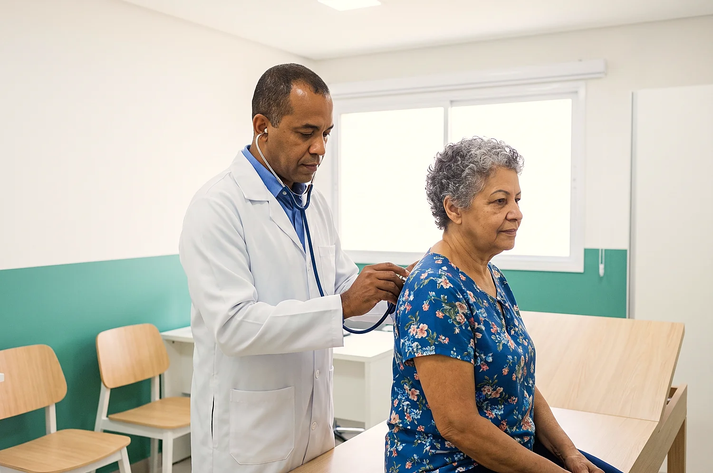

Acolhimento de verdadeA recepção e a enfermagem são as mais elogiadas nas avaliações, muitas vezes pelo nome.
É o médico que olha você por inteiro, pede os exames que fazem sentido e, quando precisa, indica o especialista certo. Consulta particular aqui no bairro, com o valor informado antes de marcar.
A clínica é referência em Nova Iguaçu desde 2014, e cresceu por indicação de quem foi atendido.
Você marca pelo WhatsApp em poucos minutos, sem ficar pendurado no telefone.
Sem guia, sem autorização, sem carência. Você paga só a consulta, pelo valor que já sabia.
Mais de 1.500 avaliações de pacientes.
Muita coisa se resolve numa ida só, sem marcar exame do outro lado da cidade.
Especialistas em 19 áreas e uma equipe que explica, escuta e acompanha. Por isso o paciente volta e traz a família.
Duas unidades em Nova Iguaçu, Cabuçu e KM 32. Sem precisar ir ao centro.
Uma dor de cabeça que volta toda semana. Um cansaço que não combina com a rotina. A pressão que deu alta na farmácia. O exame que o médico pediu no ano passado e ficou na gaveta. Quase todo mundo tem uma história dessas parada em casa.
O clínico geral é o começo dessa conversa. Ele escuta o que você está sentindo, pergunta do seu histórico e da sua família, examina e decide com você o próximo passo. Muitas vezes o caso se resolve ali mesmo. Quando não, você sai sabendo qual especialista procurar e por quê, sem gastar consulta tentando adivinhar.
Também é com ele que se faz o acompanhamento de quem tem pressão alta, diabetes ou colesterol alterado, e o check-up de quem está se sentindo bem e quer continuar assim.
Não precisa esperar piorar. Se você se reconheceu em alguma delas, já é motivo para conversar com o médico.
Dor, tosse, febre baixa ou mal-estar que já dura mais de alguns dias.
Falta de disposição, sono ruim ou tontura que começaram a atrapalhar o dia.
Para quem já trata e precisa acompanhar, e para quem desconfia que está alterado.
Faz mais de um ano que você não faz exames? A consulta organiza o que pedir.
Trouxe o resultado e não sabe o que significa. O médico lê com você.
O clínico avalia e encaminha para a especialidade certa, se for preciso.
A consulta começa pela conversa. O médico pergunta o que você está sentindo, desde quando, quais remédios usa e como está a saúde da família. Parece simples, mas é daí que sai boa parte do diagnóstico.
Depois vem o exame físico: pressão, coração, pulmão, barriga, o que fizer sentido para o seu caso. Se precisar de exame, ele explica para que serve cada um. Com o resultado em mãos, você volta e ele mostra o que mudou e o que fazer a partir dali.
Nem todo mundo precisa de todos. O médico pede o que faz sentido para o seu caso, e boa parte é feita aqui mesmo.
Hemograma, glicose, colesterol, rins e tireoide. Mostram muita coisa que ainda não dá sintoma.
Registra a atividade elétrica do coração em poucos minutos. Não dói e não precisa de preparo.
Imagem feita com gel e um aparelho sobre a pele. Serve para ver órgãos do abdome, tireoide e outros.
Imagem rápida dos ossos e do pulmão, feita na unidade Cabuçu.

Diz que quer clínico geral e qual unidade fica melhor. A equipe responde com o valor e os horários.
Você recebe a confirmação com data, horário e endereço. É só levar documento com foto e exames anteriores, se tiver.
O médico escuta, examina e explica o que está acontecendo e qual é o próximo passo.
Se precisar de exame, muitos são feitos aqui mesmo. Quando o exame permite, o resultado chega pelo WhatsApp.
Ninguém gosta de perguntar o preço três vezes. Por isso os valores ficam aqui, à vista, e a equipe confirma tudo no WhatsApp antes de agendar.
Valores informativos, sujeitos a confirmação no agendamento. Os exames dependem de indicação médica.
Referência em Nova Iguaçu desde 2014, a Mais Vida investiu em estrutura para receber bem quem chega: sala de espera arejada, consultórios novos e exames no mesmo endereço.
A Mais Vida nasceu em Cabuçu e escolheu ficar onde o paciente mora. Quem foi atendido voltou e trouxe a mãe, o filho, o vizinho. Foi assim que virou referência em Nova Iguaçu e chegou à segunda unidade, no KM 32.


Minha mãe teve um atendimento perfeito. Desde as informações por telefone, passando pelas recepções e finalizando com ótima consulta.
Não sou sócia, mas vou voltar toda vez que precisar.
Achei legal eles dá o resultado pelo WhatsApp, bom pra quem não precisa esperar.
O agendamento é pelo WhatsApp de cada unidade, no horário de atendimento.
A unidade KM 32 está ampliando a agenda aos poucos. Confirme no WhatsApp os dias de clínico geral nesta unidade antes de sair de casa.
Agendar em KM 32Se a sua dúvida não estiver aqui, é só perguntar no WhatsApp.
A consulta com clínico geral custa R$ 139,90 no Pix ou no cartão e R$ 120 em dinheiro. O valor é informado antes do agendamento.
Na Mais Vida o atendimento é particular: você paga a consulta direto na clínica, pelo valor que já sabia antes de marcar. Não tem guia, autorização nem carência. Chamou no WhatsApp, escolheu o horário, está marcado.
O clínico geral avalia a pessoa como um todo e trata os problemas de saúde mais comuns do adulto. O especialista cuida de uma área específica, como coração ou estômago. Se você ainda não sabe a origem do que está sentindo, começar pelo clínico costuma poupar tempo e dinheiro.
Pode. Ele solicita os exames que achar necessários, prescreve o tratamento e acompanha o resultado. Vários exames são feitos aqui mesmo na clínica.
Sim. Na consulta ele conversa sobre idade, histórico e hábitos e define quais exames fazem sentido para você. Não existe um pacote igual para todo mundo.
Pelo WhatsApp da unidade mais perto de você. Diga a especialidade e o melhor dia, e a equipe passa os horários disponíveis.
Quando o exame permite, o resultado é enviado pelo WhatsApp. Os demais ficam disponíveis para retirada na clínica.
Dor forte e repentina, falta de ar, desmaio ou fraqueza em um lado do corpo são casos de emergência. Procure a UPA ou o hospital mais próximo, ou ligue 192. A consulta é para o que pode esperar o horário marcado.
Chame a equipe no WhatsApp, diga que quer clínico geral e veja os horários disponíveis.